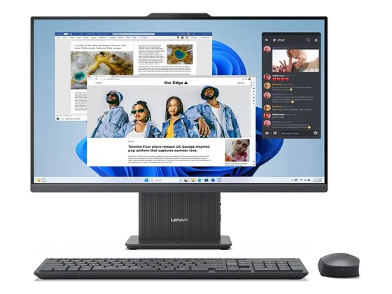
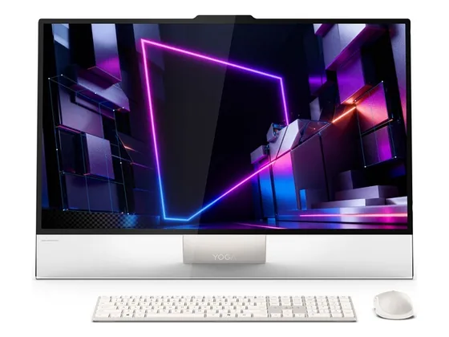
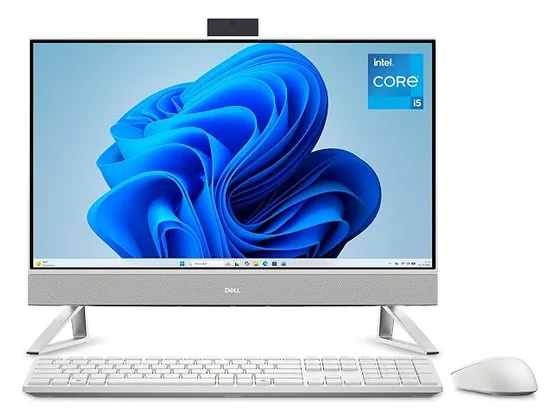
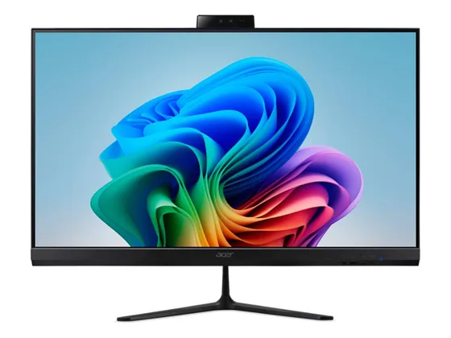

Lenovo IdeaCentre AIO 27 : avis, tests et prix
Le verdict en une phrase. Un tout-en-un 27 pouces économe. PCMag et CNET regrettent sa définition Full HD et sa webcam.
N° 4 sur 10 dans le top 10 ordinateurs tout-en-un.

Pour qui ?
Vous voulez un grand écran économe pour un usage familial.
Vous faites beaucoup de visio ou travaillez sur des documents détaillés : webcam médiocre, Full HD sur 27 pouces.
Le consensus de la presse
Une seule note chiffrée à ce jour : 6,4/10, attribuée par CNET. À lire comme un avis isolé, pas comme un consensus. Ces notes portent sur la gamme : configurations ou générations proches de celle vendue aujourd'hui.
Où l'acheter
La configuration peut différer d'un marchand à l'autre : vérifiez la fiche avant d'acheter. Seuls les liens Amazon sont affiliés à ce jour ; les autres sont de simples liens directs. Aucun n'influence les notes ni le classement.
Tous les tests recensés
Chaque ligne renvoie vers le test d'origine. Les notes sont converties sur 10 ; « test » signale un article sans note chiffrée. Notre méthode.
Source du relevé : Test CNET.
Les alternatives pour le même usage
Tout le top 10 →
Lenovo Yoga AIO 32Écran 31,5 pouces superbe, design travaillé et très bon son : le tout-en-un Windows le plus ambitieux, noté 9/10 dans sa version précédente. N° 3 · Le milieu de gamme sûr
Dell 24 Tout-en-unUn tout-en-un abordable avec un écran aux couleurs vives, un bon son et une webcam efficace, selon PCMag. N° 5 · Le 144 Hz
Acer Aspire C 27Un tout-en-un 27 pouces à l'écran fluide et bien réglable. Les générations précédentes étaient notées autour de 4/5.Questions fréquentes
Que pense la presse de l'ordinateur Lenovo IdeaCentre AIO 27 ?
La note presse moyenne est de 6,4/10, calculée sur 1 note. Un tout-en-un 27 pouces économe. PCMag et CNET regrettent sa définition Full HD et sa webcam.
Quels sont les points faibles relevés par les tests ?
Définition Full HD sur 27" ; Webcam médiocre.
À qui s'adresse le modèle Lenovo IdeaCentre AIO 27 ?
Vous voulez un grand écran économe pour un usage familial. À éviter si : vous faites beaucoup de visio ou travaillez sur des documents détaillés : webcam médiocre, Full HD sur 27 pouces.
Où l'acheter, et à quel prix ?
Comptez environ 880 € (prix indicatif constaté en octobre 2026). Nous l'avons trouvé en vente chez Amazon et Darty. Les prix changent vite et la configuration peut différer d'un marchand à l'autre : seul le prix affiché par le marchand fait foi.